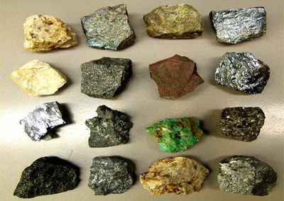

Minérios
"Elemento químico"
O ferro é um elemento químico, símbolo Fe, de número atômico 26 e massa atômica 56 u. À temperatura
ambiente, o ferro encontra-se no estado sólido.
O diamante é um cristal sob uma forma alotrópica do carbono, de fórmula química C. É a forma triangular estável do carbono em pressões acima de 6 GPa. Comercializados como pedras preciosas, os diamantes possuem um alto valor agregado.
Saiba MaisElemento químico
O ouro é um elemento químico de número atómico 79 que está situado no grupo 11 da tabela periódica, e de
massa atómica 197 u. Na natureza, o ouro é produzido a partir da colisão de duas estrelas de nêutrons. O
ouro é utilizado de forma generalizada em joalharia, indústria e eletrônica, bem como reserva de valor.
By: Aryane